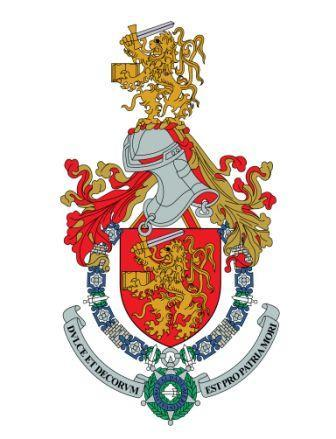
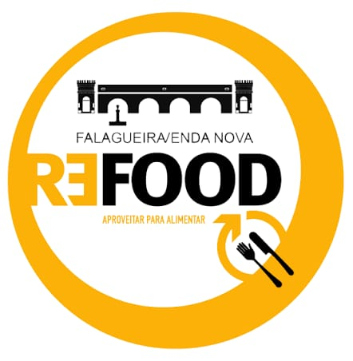

Acompanhamento diário do desperdício alimentar
No âmbito do programa Iron Pitch da Academia Militar, foi desenvolvido o Projeto de Doação e Recolha de Excedentes Alimentares entre a Academia Militar e a REFOOD da Falagueira, com o objetivo de implementar um processo estruturado de doação diária dos excedentes alimentares produzidos.
toneladas

